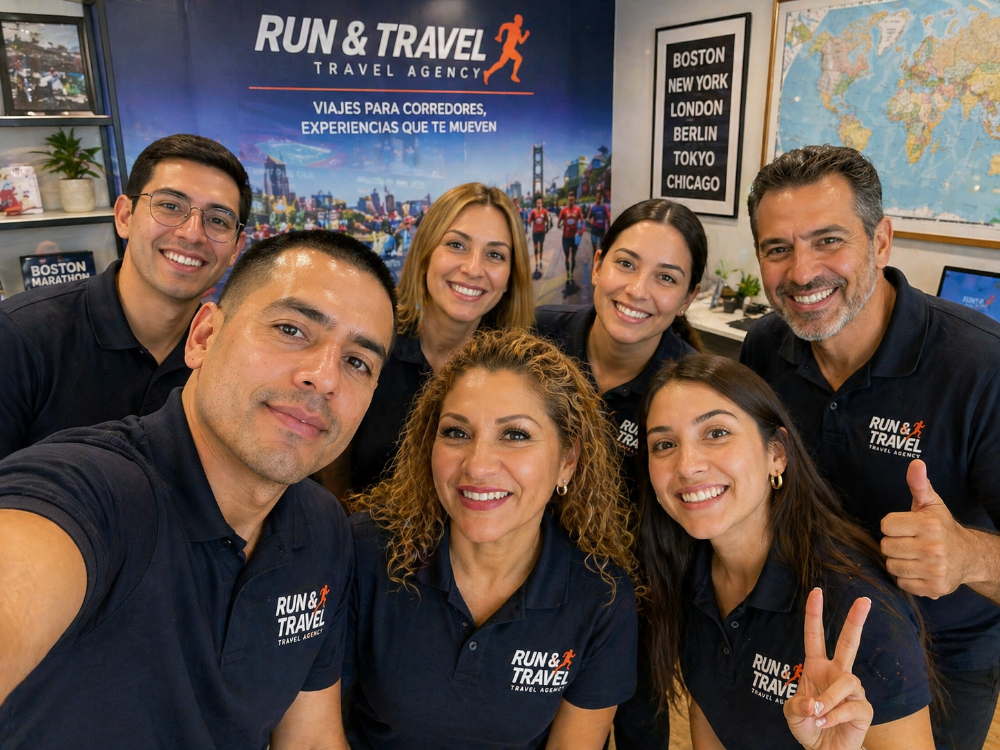

Partnership
We work with trusted accommodation providers, transport partners and local destination specialists to create organised marathon travel experiences.
About the agency
6 Majors Travel is a specialist concept agency built around the needs of runners, clubs and supporters attending the six World Marathon Majors.
Major marathon weekends are exciting but complex. Travellers need reliable accommodation, transport advice and clear information about race-week movement. Our purpose is to make those decisions easier.
The website presents a professional travel agency that offers destination information, package examples and a simple enquiry form for prospective customers.
We will provide you with the best support in this journey. we know what you need.

We work with trusted accommodation providers, transport partners and local destination specialists to create organised marathon travel experiences.
Our planning process is built around clear communication, reliable information and professional support before, during and after race weekend.
Runners and supporters receive practical guidance on hotels, transfers and destination details so they can focus on the event with confidence.